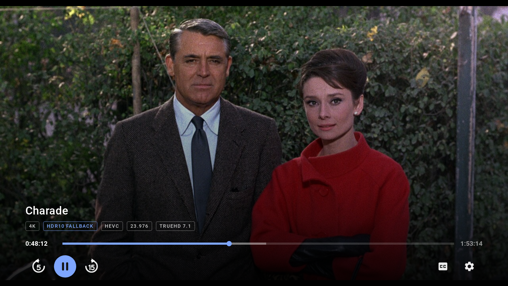
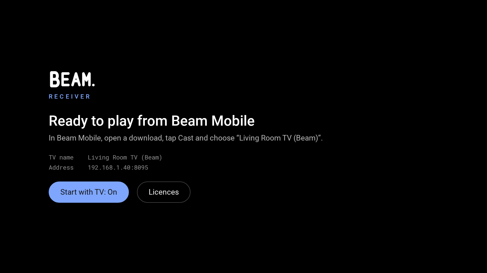

What it does
Beam's player, on any TV
Shows up by itself. Answers network discovery as "Living Room TV (Beam)", so it is never mistaken for the TV's built-in receiver, and rejoins after Wi-Fi or Ethernet changes.
Always ready. Runs quietly from boot. A video sent while the TV sleeps wakes the screen and opens over whatever is on; Back returns you to it.
Beam's picture pipeline. Dolby Vision profile 7 remuxes fall back to their HDR10 base layer instead of a black screen. HDR switches on even when a file's colour tags are missing, and a 128 MB buffer rides out Wi-Fi dips at remux bitrates.
Sound stays intact. Audio passes through to your AV receiver or soundbar as the TV allows. There's no refresh-rate switching, so no HDMI resync drops the sound at the start, and DTS and TrueHD can be decoded on the TV as a backup.
Controls you know. Beam's player look: title, spec chips, a timebar, −5/+15 s, subtitles and audio tracks. The phone's remote bar drives it too: play, pause, seek and stop.



Android 8+ TV
UPnP / DLNA renderer
Starts with the TV
Dolby Vision P7 → HDR10
Audio passthrough
No account, no library to set up